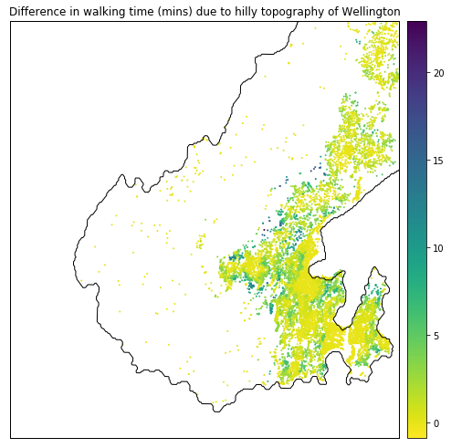
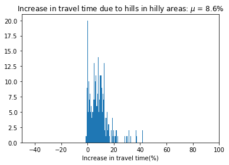

Walking in Wellington - walkability metrics
Introduction
Playgrounds are important local amenities that are designed with pedestrian access in mind. Hence, accessibility to playgrounds can act as a proxy for measuring walkability of a city. Good design of local amenities should manage the various factors that might prohibit walking. For example, difficult terrain, population density induced crowding etc. In this post, we’ll be examining the following question in detail.
How prohibitive is Wellington’s topography on pedestrian accessibility to playgrounds?
In a previous post, accessibility was calculated in units of distance. Distance is an excellent metric for driving or walking on flat land. For short travels by car or walking on flat land, distance can be directly converted to travel time - since most people have an intuitive understanding of their average driving speeds (50 km/h for residential roads in New Zealand), or their approximate walking speed on flat land (usually around 5 km / h for a fit adult as given in Section 3.4 in NZTA pedestrian planning and design guide). Hills are not an issue for drivers provided road quality and safety are no different to flat land. But hills do impact travel time for pedestrians; which in turn impacts accessibility.
Technical overview
This post is quite heavy on technical detail - accessibility analysis that includes the impact of street gradients on travel speed isn’t an out of the box analysis. So, this post is much more of a methodology post with some (hopefully, interesting and useful) insights along the way.
Key technical challenges that needed to be overcome are listed and referenced below. Some are covered in this post, others are only available in the companion Jupyter Notebook
| Issue | Covered in |
|---|---|
| Converting accessibility metric from distance to travel time | Blog Post |
| Getting street gradients from elevation data | Blog Post |
| Adjusting travel time according to street gradients | Blog Post |
| Filtering street gradient networks | Jupyter Notebook |
| Creating pandana network from osmnx graph with street gradients | Jupyter Notebook |
| Adding colourbars to osmnx isochrone plots | Jupyter Notebook |
| Calculating route statistics with osmnx and pandana | Jupyter Notebook |
Data munging
All the technical challenges identified above involve data munging. The relief is that we’ll only be working with two datasets, and most of the munging is done with the street network.
- WCC playground locations: downloaded as a zip file
- Wellington street network
- without elevation: using OpenStreetMap via pandana
- with elevation: using OpenStreetMap and Google Elevation API via osmnx
WCC Playgrounds
The WCC playground data is easy to consume as it’s just a set of geolocations. The form is appropriate for accessibility analysis too since Points of Interest (POIs) are always single, representative coordinates (rather than polygons).
Wellington street network: without elevation
Getting the Wellington street network in a form suitable for accessibility analysis is trivial. The previous posts on fuel station and playground accessibility cover the process in detail. Without delving into the specifics, the process simply calls pandana’s OpenStreetMap loader.
Changing accessibility units
The default pandana network has edge weights in metres, which means that the accessibility analyses will also be in metres. We can post-hoc convert distance to travel time with an average walking speed of 5 km/h or, 83 m/minute if we want travel time in minutes.
| Accessibility as distance | Accessibility as travel time |
|---|---|
 |
 |
The accessibility data can be extracted and plotted as a histogram. Here, we see that the average distance to a playground is 700 m, or an 8 minute walk.
| Distance distribution | Time distribution |
|---|---|
 |
Wellington street network: with elevation
Both the nodes and edges of the street network can be enriched with elevation data retrieved from Google Elevation API. Nodes have a single value for elevation. Elevation at the connecting nodes of an edge can be used to derive the inclination / gradient.
The above steps have been simplified to terse one-liners by the excellent Python package, osmnx, as shown in the code block below. They require signing up to the Google Elevation API and getting an API key.
Most of the code is copied from Geoff Boeing’s tutorial. The key difference is that I’ve stored the API key in a YAML file. By the end of the code block, we have an osmnx graph with street gradients for every edge in the network.
# Open the API keys stored in a YAML file
with open("utils/api_keys.yaml", 'r') as stream:
data_loaded = yaml.load(stream)
# Get Google Elevation API key
google_elevation_api_key = data_loaded['google_elevation_api_key'][0]
# Create an OSMNX walking street network for the Wellington bounding box
G = ox.graph_from_bbox(north, south, east, west, network_type='walk')
# Add elevation values for the nodes in the OSMNX graph
G = ox.add_node_elevations(G, api_key=google_elevation_api_key)
# Generate an edge grade (inclination) with the elevations at the nodes
G = ox.add_edge_grades(G)Wellington street elevation profile
osmnx generates an edge weight based on connecting node elevation values. We can extract and plot the edge gradients without and with a filter on values.
| All street gradients | “Flat” regions (within 5% gradient) |
|---|---|
 |
 |
The graphs show that Wellington is largely flat around the coastline but is surrounded by hills. Larger suburbs like Karori and Johnsonville have been built on elevated plateaus.
Dealing with MultiDiGraph
Osmnx enriches the street network with elevation and gradients using Networkx’s Multidigraph structure. In this structure, the edge (u,v) is also present as (v,u) with the opposite gradient. The duplication is why the average elevation profile is 0 and symmetric!

Since accessibility analysis doesn’t prescribe a starting point, we have to take both to and from journeys to fully quantify the impact of hills on travel time. To do this, we need to (1) split the components of the graph, (2) calculate accessibility for each component and, (3) sum the components as total travel time.
The street network can be easily split to only give unique (u,v) in one graph and the inverse, (v,u), in another. Accessibility analysis is performed for each network and the values summed together to give the total accessibility.
| graph | geometry | grade | length | name | u | v |
|---|---|---|---|---|---|---|
| Undirected (u,v) | LINESTRING (174.7934694 -41.2275193, 174.79300… | 0.1319 | 66.800 | Truscott Avenue | 1259077823 | 1259072929 |
| Undirected (u,v) | LINESTRING (174.7921165 -41.2280406, 174.79263… | -0.0475 | 65.443 | Truscott Avenue | 1259077823 | 1259072943 |
| Undirected inverse (v,u) | LINESTRING (174.7934694 -41.2275193, 174.79300… | -0.1319 | 66.800 | Truscott Avenue | 1259072929 | 1259077823 |
| Undirected inverse (v,u) | LINESTRING (174.7921165 -41.2280406, 174.79263… | 0.0475 | 65.443 | Truscott Avenue | 1259072943 | 1259077823 |
Converting incline distance to travel time
A simple search led me to Naismith’s Rule and then to Tobler’s Hiking Function to calculate travel time as a function of distance and gradient.
I’ve chosen to go with Tobler’s without much rationale other than its simple form. Tobler’s hiking function for speed, \(\nu\), is a shifted exponential with three parameters: \(a\), \(b\) and \(c\) which give the fastest speed, speed retardation due to gradient and shift from zero respectively.
\[ \nu = a\exp^{\left(-b.|slope~+~c|\right)} \]
Note that \(slope\) in the equation is a dimensionless quantity: \(\frac{dh}{dx}\) (or, rise / run). Terminology-wise, \(slope\), is equivalent to gradient and inclination. Tobler’s function can also be written with slope in degrees (\(^{\circ}\)). Similarly, speed is given in in km/h and can be converted to a travel time in minutes with a multiplicative factor, (60/1000). Both time and speed versions of Tobler’s function are shown in the graph below.
| a | b | c | |
|---|---|---|---|
| Physical meaning | Fastest speed | Speed change due to gradient | Gradient of fastest speed |
| Mathematical representation | \(\nu_{max}\) | (\(\frac{\Delta\nu}{\Delta ~gradient}\)) | \(gradient\|\nu_{max}\) |
| Tobler | 6 | 3.5 | 0.05 |
| Brunsdon | 3.557 | 2.03 | 0.133 |
While I haven’t read Tobler’s original paper, a brief exposition of other equivalent functional forms to Tobler’s has been written up by Chris Brunsdon. Brunsdon’s analysis shows a different relationship to Tobler’s - likely because the underlying data is different.

For a more rigorous analysis of pedestrian accessibility, we’d refit the functional form above (or similar) as Brunsdon does for different types of pedestrians. According to NZTA and various other studies, there is significant heterogeneity in walking speed; both from the route (terrain, incline etc) and also the characteristics of the walker e.g. carrying things, footwear, and demographics. Anecdotally, we know that a commuter will walk at a very different speed to a father taking his children to the playground during the daytime.
Accessibility analysis for hilly Wellington
With a network of street gradients converted to travel time, we can now compare the impact of hills on accessibility. In the companion Jupyter notebook, there are a couple of additional, technical steps: - Creating a pandana network from an osmnx graph with travel time calculated according to the street gradient. - Calculating overall accessibility as total travel time. In the notebook this is done by calculating accessibility separately for (u,v) and (v,u) networks and summing the values.
Hills vs. Flat
The main accessibility heatmap for hilly Wellington, seen below, doesn’t look too different to the flat land assumption.
| Flat land assumption | Accounting for Hills |
|---|---|
|
We only see the impact of the hills when we consider a differential heatmap. Anyone familiar with the topography of Wellington will immediately note that areas around the slopes of the Town Belt and the Western Hills are affected.
| Difference | Difference > 2 minutes |
|---|---|
|  |  |
Impact of hills on travel time
It’s worth noting that while accessibility to playgrounds is worse due to hills, the total travel time in hilly areas only increases by 9% on average. Hilly nodes have an absolute average nearby gradient of more 5%. Sample code to calculate the average street gradient of a node is given below.
# Extract an undirected graph from an elevation MultiDiGraph
G_undir = G.to_undirected()
nodes_gdfs, edges_gdfs = ox.graph_to_gdfs(G_undir)
# Get local average gradient by node
u_grades = (edges_gdfs
.groupby('u')
.agg({'abs_grade': 'mean'})
.reset_index()
.rename({'u': 'id'}, axis=1))
# Repeat for v
...
# Join u_grades and v_grades and drop duplicates
...| Hilly Nodes | Flat Nodes |
|---|---|
|  |
Nearby options?
The impact of Wellington’s topography is also seen in the availability of council playground options. In a future post, it would be interesting to see the choices available per capita - since flatter suburbs are also more likely to have higher population density.
| Nearest playground | Second nearest playground |
|---|---|
Conclusions
The average impact of hilly terrain on playground accessibility seems to be low - only a 9% increase in total travel time. However, the average is a poor representation since the distribution of travel time is highly skewed. Even under the flat land assumption, total travel times can be higher than 40 minutes.
In the following post, we will compare accessibility across different residential regions of Wellington, with the aim of identifying areas with poor access.